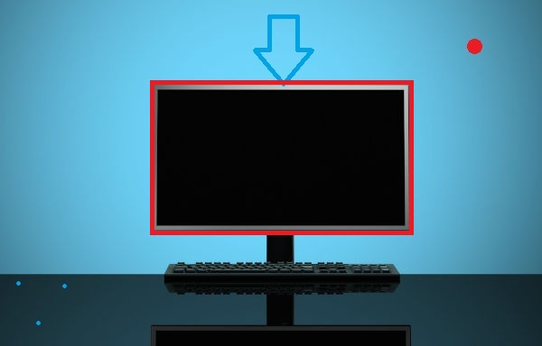
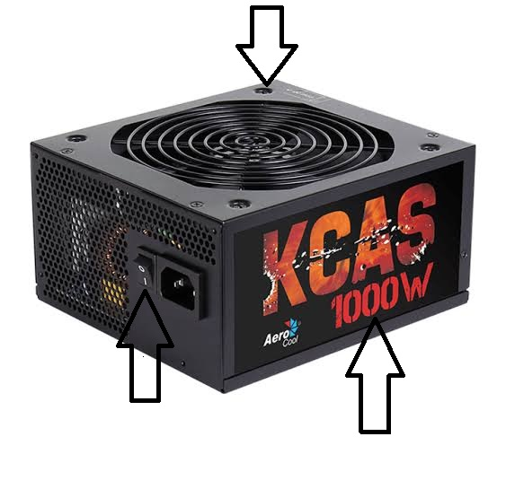

Map area kasutamine

palun tee klick hiirega pildi peal!


Arvutikuvar (ka arvuti monitor, videoterminal, ekraan) on arvuti väljundseade,
mis muudab analoog- või digitaalinfo pildiks. Kuvar on üks tähtsamaid arvuti komponente kasutajasuunalise väljundseadmena.
Vajadusel kuvatakse klaviatuurilt sisestatud vastused,
korraldused ja muu info. Seetõttu on see personaalarvuti juures kasutajale üks tähtsamaid seadmeid;
ilma selleta on arvutiga ebamugav ja raske töötada.
Personaalarvutite juurde lisatakse tavaliselt kas kineskoopkuvar (vt CRT-katoodkiirtetoru),
vedelkristallkuvar (LCD), plasmakuvar ja/või OLED-kuvar.
Tagasi
tagasi